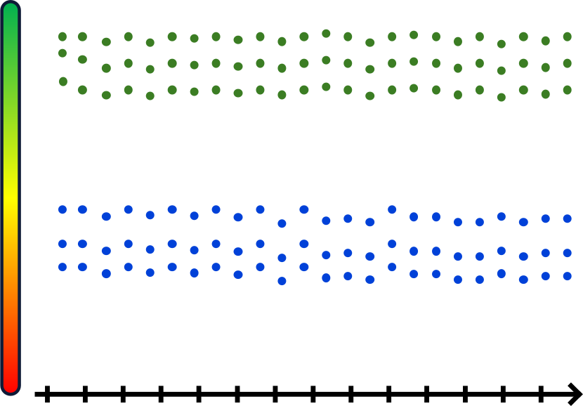
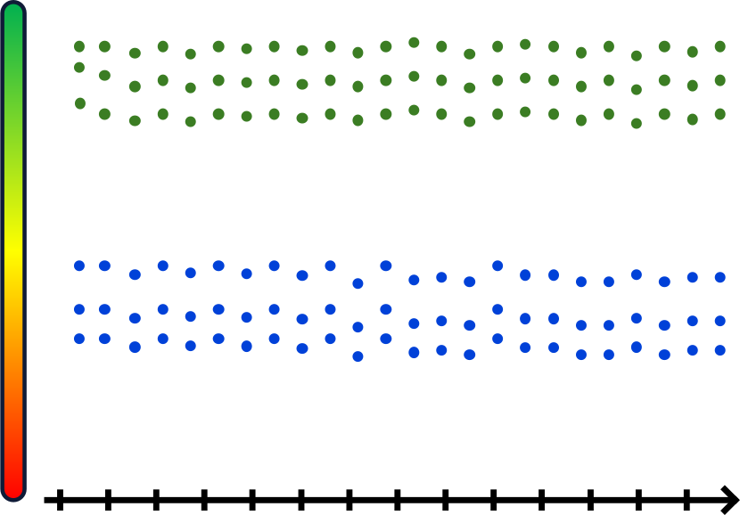

KNESSIGHT
Trends Analyzer In The Israeli Politics
| Oryan Hassidim | Avi Sommer | Betzalel Yanir | HUJI |
| Mr. Effi Levi | Prof. Shaul Shenhav | HUJI | |
67547 Engineering Project Workshop
The Rachel and Selim Benin School of Computer Science and Engineering
The Hebrew University of Jerusalem


 
